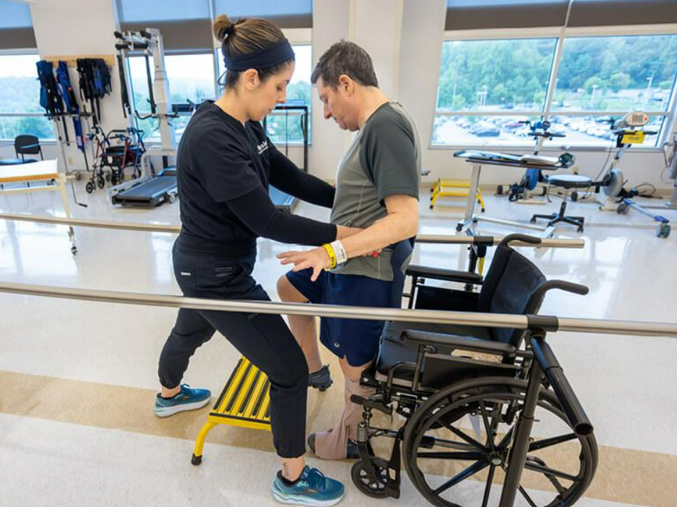
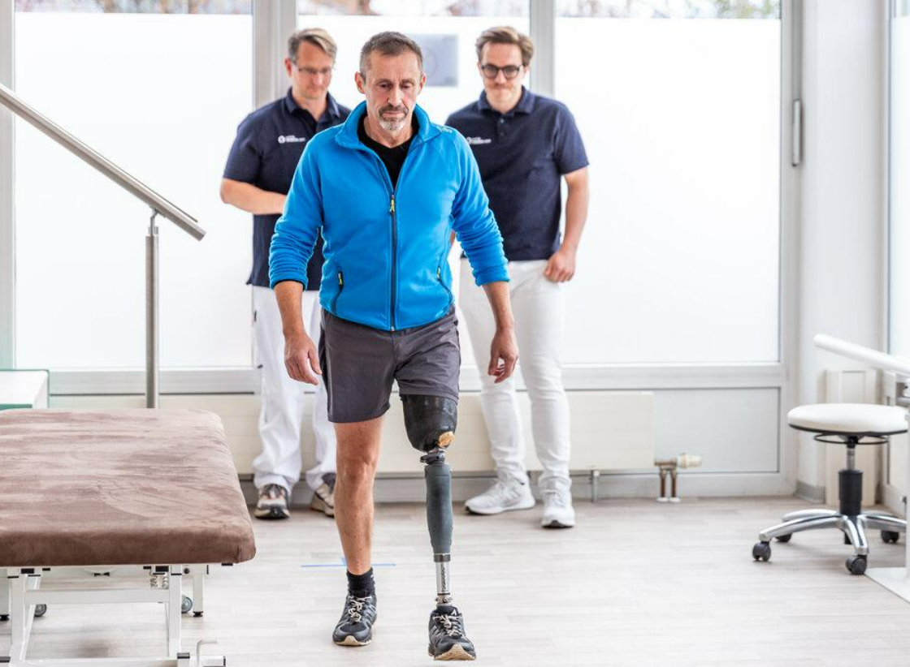
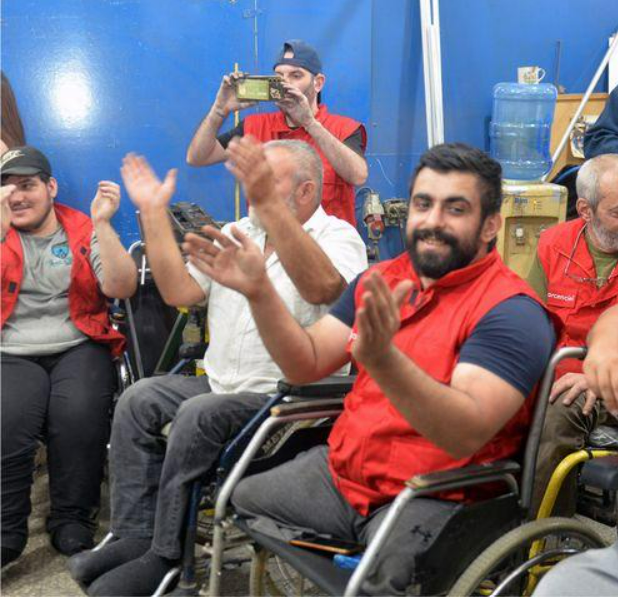
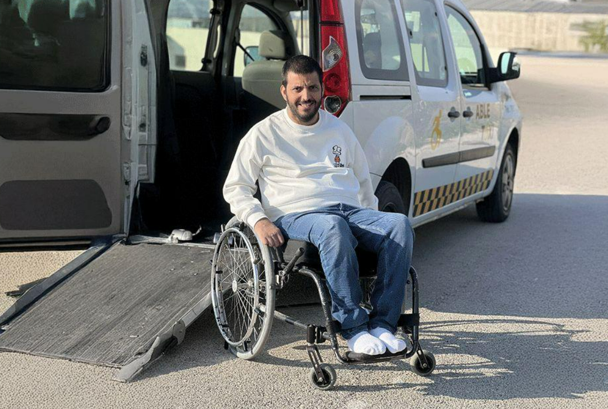

Disability Inclusion
Promoting accessibility, equal opportunities, independence, and meaningful participation for adults with disabilities.
Supporting adults with disabilities through compassionate care, rehabilitation, and social inclusion — empowering greater independence and quality of life.
Our areas of focus bring together disability inclusion, rehabilitation, community participation, and sustainable development to support a more accessible and inclusive society.
Promoting accessibility, equal opportunities, independence, and meaningful participation for adults with disabilities.
Supporting physical well-being, mobility, rehabilitation, and person-centered care that promotes greater independence.
Encouraging inclusive learning, skills development, and educational opportunities for people of different abilities.
Encouraging sustainable, accessible, and welcoming environments that support inclusive community participation.
Encouraging inclusive participation in agricultural, cultural, environmental, and community-based opportunities.
Our approach brings together medical rehabilitation, mobility support, and social inclusion to help adults with disabilities build confidence, maintain independence, and participate in everyday life.

01Supporting physical health, functional recovery, and rehabilitation needs through an individualized approach focused on comfort, progress, and quality of life.

02Encouraging greater autonomy for adults with physical disabilities through mobility assistance, everyday skills, and support for independent living.

03Encouraging social connections, community participation, and access to supportive environments where people with disabilities feel respected and included.
Independence looks different for everyone. We believe adults with disabilities deserve the freedom, support, and opportunities to make choices and participate fully in life.
From everyday mobility to accessible spaces and community participation, our approach emphasizes personal autonomy, dignity, and practical support.
Encouraging confidence and practical independence in everyday activities.
Promoting environments that are accessible and welcoming to all.
Recognizing individual needs, preferences, and personal goals.
Encouraging social connections and opportunities for active participation.

Supporting adults with disabilities also means recognizing the important role of families, caregivers, and communities. Our approach encourages understanding, connection, and practical support at every stage of life.
Helping families better understand disability, accessibility needs, and ways to encourage autonomy and participation in everyday life.
Recognizing caregivers' needs and encouraging access to information, practical guidance, and supportive connections.
Promoting respectful communication, emotional well-being, and stronger relationships within families and communities.
Encouraging inclusive networks, community participation, and opportunities for individuals and families to connect.
Whether you're looking for information about disability inclusion, rehabilitation, or community support, we'd be glad to hear from you. Connect with LADIC to learn more about our work and available opportunities.